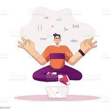
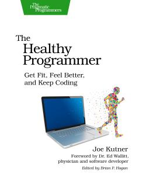

Blogs
Fitness For Developer
Exercise is one of the main factors in any field. here are some tips that we should follow to make our day productive....

Tip #1: Plan out your day
By this, I mean really plan out the hours, even minutes, of your day and you will see how much time you have. You can use the calendar on your phone or a written planner, what is key is to give your workout as much value as a meeting or event. In Friedman’s article, “Regular Exercise is Part of Your Job”, he says that when people say they don’t have time for exercise, it means that they aren’t prioritizing it. If it motivates you to do well at work, then see your workout as just another job responsibility. By working out, you are adding tons of value to your work.
Tip #2: Find an activity you like to do
Whether it is cycling, dance, CrossFit, soccer, yoga, jogging, etc., you will be more inclined to stick to something you enjoy as opposed to making exercise a chore. I believe that there is a limit to the amount of willpower someone can exert in any given amount of time, so choosing a desirable activity preserves your willpower for other challenges throughout the day. Additionally, you will be motivated to continue to achieve more in your activity. I personally like to create performance-based goals because it is really cool to see how much potential the human body has.
Tip #3: Hack your subconscious
You know how you operate. If you think that you are more apt to do things in the morning, then do your most grueling tasks in the morning. My belief is that when we wake up, we have had little time to form an opinion about anything. We can significantly reduce decision fatigue by setting aside our thoughts and just do. So in the first couple of hours , exercise, listen to podcasts, tidy up the apartment, and practice some algorithm problems. I personally love my quiet mornings because that is when I am most productive.
5 Top Exercise Plans For Coders and Programmers: Start today!

The Healthy Programmer
Get Fit, Feel Better, and Keep Coding

Learn Python In Fun Way!
Python is an interpreted, object-oriented, high-level programming language with dynamic semantics.